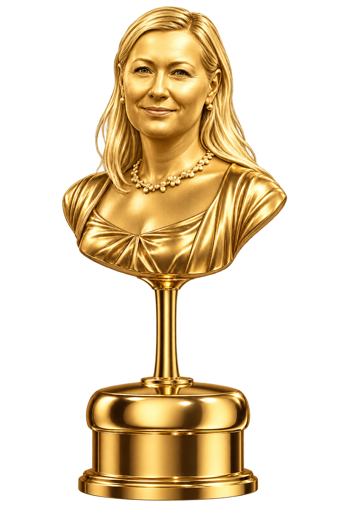

stars
Událost roku • Mimořádné vysílání
Státní slavnostní galavečer
Tradiční předávání nejvyššího státního vyznamenání za mimořádné zásluhy v oblasti tělesné i duševní kultury.

zlatá mirka 25.10 v 19:00
schedule
Živý odpočet do zahájení galavečera
--
Hodin
:
--
Minut
:
--
Sekund
Zbývá celkem: ... hodin (25. 10. 2026 v 19:00 SEČ, Praha)